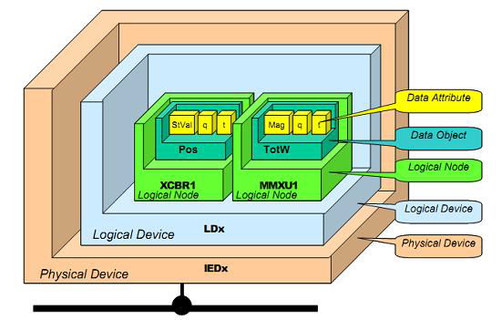
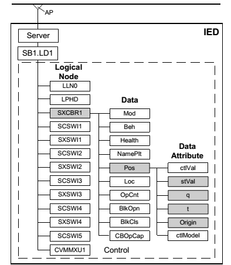
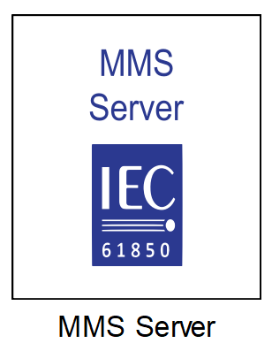
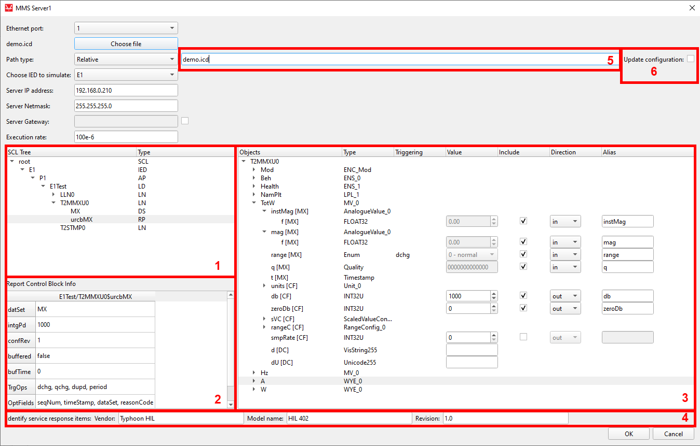
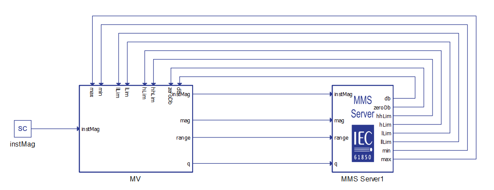
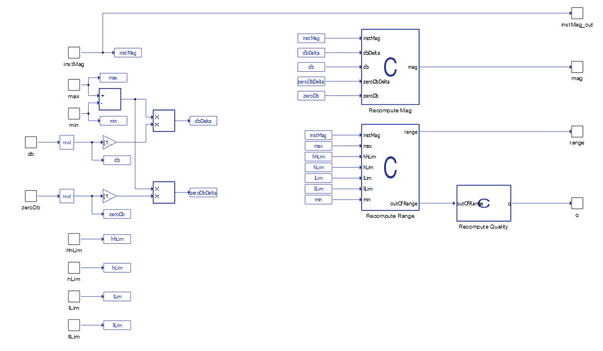

IEC 61850 MMS Protocol
Description of the IEC 61850 MMS protocol implementation in the Typhoon HIL toolchain.
IEC 61850 MMS protocol
IEC 61850 (IEC 61850 – Communication Networks and Systems in Substations) standard defines MMS protocol (Manufacturing Message Specification) as a server/client type communication. This protocol is used for information exchange between IEDs (IED – Intelligent Electronic Device) and higher level devices (such as SCADAs) over the Ethernet. The MMS protocol is mapped on TCP/IP and enables the access to server based on its IP address where client can read/write data, read configuration and exchange files.
IEC 61850 is an object oriented standard. Each physical device consists of logical devices (LD), logical nodes (LN), data objects (DO) and data attributes (DA) as illustrated in Figure 1. The name of each object of IEC 61850 is standardised. Also, IEC 61850 standardizes the access of each object.

Each physical device can consist of one or more logical devices. Logical device is made up of logical nodes, where each logical node defines one function of the IED device. Each logical node consists of mandatory and optional data objects defined by the standard, and each data object has predefined data attributes. Data attributes represent the leaves of this tree structure. An example of IED configuration is illustrated in Figure 2. The IED has one logical devise called LD1. There are multiple logical nodes that model one functionality of the IED. For example, XCBR models circuit breaker, CSWI models, switch controller, XSWI models circuit switch and MMXU models measurements. XCBR node has data object Pos that represent the information of the breaker position. Pos has stVal (state value), q (quality), t (time stamp) and other data attributes.

The access to each object in the configuration is also standardised. For example, to read stVal of circuit breaker SXCBR1, the path would be LD1/SXCBR1$Pos$stVal. The client can also access the information of whole data object. For example LD1/SXCBR1$Pos path is used to read all attributes of Pos object of the circuit breaker.
Data sets and reporting
The IEC 61850 enables the arbitrary data to be grouped together to form Data Sets. Data set can group any object in the configuration. For example data set can group Mod data object and Pos$stVal data attribute of circuit breaker node with object or attributes of MMXU node, or even the whole MMXU node.
This data sets are essential part of reporting. Reporting is used to inform the client that the data has changed withouth the need for client to issue a read request. Each reporting block has a reference to one data set. If one element of the data set changes value, the report (containing information for every element of the data set) will be sent to the client.
MMS protocol in Typhoon HIL toolchain
MMS protocol is implemented through MMS Server inside the Typhoon HIL toolchain. The MMS Server is modeled using Signal Processing component. MMS protocol is supported by the following Typhoon HIL devices: HIL402, HIL101, HIL404, HIL602+, HIL604, HIL506, and HIL606.
MMS Server component

Property descriptions for the MMS Server component are provided in the following list:
- Ethernet port
- Select the Ethernet port on the back of the HIL device that is used by the MMS Server application. For 4th generation devices (HIL101, HIL404, HIL506, and HIL606), any available port can be used for communication, while older devices only support communication over port 1.
- Import SCL file
- A SCL configuration file is imported using this button.
- Path type
- Select the save format of the SCL file path. The absolute path will store the full system path to the SCL file, whereas relative path will save the path relative to the model directory.
- Choose IED to simulate
- Choose IED to simulate if SCL configuration has multiple IEDs defined.
- Server IP address
- Server IP address value
- Server Netmask
- Server Netmask value
- Server Gateway
- Server Gateway value
- Execution rate
- Execution rate of the MMS Server component
Once the SCL file is loaded in the dialog, the file is parsed and a tree view of the IED is generated. An example of this view is shown on the Figure 4.
- In this window SCL structure is presented to the dept of Logical Node for
easier navigation through the configuration. Also Data Sets and Report
Blocks are shown here. The acronyms are:
- IED - Intelligent Electronic Device defined in the configuration
- AP - Access Point
- LD - Logical Device
- LN - Logical Node
- DS - Data Set
- RP - Reporting Block
- Detailed information about the Data Sets and Reporting Blocks are shown in this window. The information about the Data Set consists of the elements of that Data Set. The information about the Reporting Block consists of reported Data Set, integrity period, buffering options, triggering options, and other fields.
- Detailed information about each Logical Node is shown here. Information about Data Objects and Data Attributes can be viewed and changed here.
- Identify service response items. These values are returned to Client when identifying the server.
- Relative or absolute path of the SCL file is shown here. If the path to the SCL file is changed, it can be changed here instead of importing the file again and changing the Server parameters.
- The Update Configuration checkbox is available only if the configuration is already loaded. When checked, this field allows for loading a new .icd file that is a variation of existing configuration (i.e. a configuration with few different signals) and with the same configuration of inputs/outputs.

MMS Server attribute manipulation
- Object - The name of the Data Object and Data Attribute
- Type - Class of the Data Object and type of the Data Attribute as defined in the SCL file
- Triggering - triggering options of the Data Attribute. Triggering can be on data change (dchg), data update (dupd) or quality change (qchg). Triggering option defines when the reporting will be generated.
- Value - value of the Data Attribute
- Include - if include is enabled, appropriate signal terminal will be created on the component that alows the user to connect the simulation signal to the MMS Server component
- Direction - specify the direction of the signal terminal
- Alias - if alias is not defined, the terminal label will be generated following the pattern LDname_LNname_DOname_DAname. If the alias is defined, the terminal label will be the same as alias.
MMS Server capabilities
MMS Server modeled in the Typhoon HIL tool-chain enables only the interface to the Data Attributes and does not model how these attributes are controlled in real life applications. In other words, the MV (Measured Values) common data class ,defined by the IEC 61850 standard, dictates that the mag attribute is updated using instMag value in such a way that if the instMag value is changed more than the threshold value, the mag value will be updated accordingly. On the other hand, the threshold value is defined by the values of db (dead band), min and max attributes. Similar, the range attribute value is defined by the value defined by the rangeC (range configuration) attribute. Quality is also updated according to range and mag values.
Although this is not modeled automatically, it is possible to model this functionality using Signal Processing components. The example of achieving the this is demonstrated in the MMS Server example.
MMS Server implemented in Typhoon HIL toolchain also supports the mechanism of reporting. The reporting blocks must be properly defined in the SCL.
MMS Server example
The example of a MMS Server is located in the example folder under the examples\models\communication\IEC 61850 MMS Server. The example model shows how to define the values of attributes, how to connect attributes with the signals from the model and how to achieve the proper functionality of MV (Measured Values) data class as defined by the IEC 61850 standard.
The example model is shown in Figure 5. The SCL file that is imported is the demo.icd file, which is also located in the example folder. The attributes defined and their values are the same as in Figure 4. Once the attribute include and direction fields are defined, appropriate terminals will be created on the component. These terminals are used to connect the Server values to the model. The general concept is that everything that the Client reads from the simulation is defined as an input to the component and everything that the Client writes to the simulation is defined as an output.

The subsystem called MV implements the functionality of Measured Values data class as defined by the standard. The content of the MV subsystem is shown in Figure 6.

The value of instMag is used to calculate the value of mag attribute. Also, this values is directly connected to the instMag terminal of the Server component. The value of mag is updated every time the value of instMag is changed more than the dbDelta value. Value of dbDelta is calculated using the following expression:
dbDelta = (max - min)/100000 * db
as defined by the standard. The value of zeroDb is used in the similar fashion to define the threshold around the zero value.
- insMag > max - range is high-high, q is out of range and questionable
- max > instMag > hhLim - range is high-high
- hhLim > instMag > hLim - range is high
- hLim > instMag > lLim - range is normal
- lLim > instMag > llLim - range is low
- llLim > instMag > min - range in low-low
- min > instMag - range is low-low, q is out of range and questionable
Because all the range configuration attributes are defined as output terminals, Client can change these values and range will be calculated accordingly.
Time synchronization
If there is a need for time synchronization, please take a look at Time synchronization.
Changing MMS Server property values using Schematic API
- load_config(absolute_file_path)
- Description:
- This function could be used as a first step. It takes absolute filepath to the .icd file as an input, and returns a parsed configuration in the form of a dictionary.
- Inputs:
- absolute_file_path - Absolute filepath to the .icd file.
- Outputs:
- config - Configuration dictionary that holds all necessary information regarding the specific MMS Server component.
- Description:
- import_config(sch_model, item_handle)
- Description:
- This function could be used as a first step. It takes the schematic model handle and the MMS Server component handle as inputs, extracts the necessary information, and returns a parsed configuration in the form of a dictionary.
- Inputs:
- sch_model - Typhoon HIL Schematic that contains the MMS Server component.
- item_handle - Handle of the MMS Server Schematic component.
- Outputs:
- config - Configuration dictionary that holds all necessary information regarding the specific MMS Server component.
- Description:
- set_leafs(config, ied, leafs_to_include, set_val_leafs, values,
directions, aliases)
- Description:
- This function could be used as a second step. It takes the configuration dictionary, the name of the IED, the list of leaves for inputs and outputs, the list of leaves to set initial values, the list of initial values, the list of directions, and the list of aliases as inputs and applies it to the configuration dictionary. It returns a boolean value dependent on the validity of the input parameters.
- Inputs:
- config - Configuration dictionary that holds all necessary information regarding the specific MMS Server component.
- ied - Python string that represents name of the IED that is to be used.
- leafs_to_include - List of leaves (strings) that is to be included.
- set_val_leafs - List of leaves (strings) for which initial values are to be set.
- values - List of initial values to set.
- directions - List of directions (strings) for included leaves.
- aliases - List of aliases (strings) for included leaves.
- Outputs:
- valid - Boolean value dependent on the validity of the input parameters.
- Description:
- export_config(config, file_name=None, file_path=None)
- Description:
- This function could be used between step one and step two. It helps to determine which leaves can be used from the applied .icd file. It takes configuration dictionary as a mandatory input and the file name and file path as non-mandatory inputs, and exports a .json file that describes the available leaves.
- Inputs:
- config - Configuration dictionary that holds all necessary information regarding the MMS Server component.
- file_name - Name of the file that is going to be created. If left None, the output filename will match the .icd filename.
- file_path - Path to the file that will be created. If left as None, the file will be created in the filepath of the script that called this function.
- Outputs:
- This function will create a .json file that consists of a list of dictionaries that are available leaves to be included. It can be useful if user does not know what leaves can be picked.
- Description:
- write_leaf_props_to_mms(config, sch_model,
item_handle)
- Description:
- This function could be used as a third step. It is used to apply modified configuration on an MMS Server component. It takes configuration dictionary, schematic model handle and the MMS Server component handle as inputs.
- Inputs:
- config - Configuration dictionary that holds all necessary information regarding the MMS Server component.
- sch_model - Typhoon HIL Schematic that contains the MMS Server component.
- item_handle - Handle of MMS Server Schematic component.
- Description:
from typhoon.api.iec_61850.mms_utils import load_config, set_leafs, \
import_config, write_leaf_props_to_mms, export_config
from typhoon.api.schematic_editor import SchematicAPI,
# Hepling function to get terminal names
def get_terminal_name(path):
path_parts = path.split("$")
terminal_name = path_parts[2]
for part in path_parts[3:]:
terminal_name += f"_{part}"
return terminal_name
mdl = SchematicAPI()
chosen_leaves = ["E1$P1$E1Test$LLN0$Mod$origin$orCat", "E1$P1$E1Test$LLN0$Mod$ctlNum", "E1$P1$E1Test$LLN0$Mod$stVal", "E1$P1$E1Test$LLN0$Mod$q"]
alias_list = ["orCat", "ctlNum", "stVal", "dU"]
dir_list = ["in", "in", "out", "out"]
value_list = [15, 155, "2 - blocked", "0000000000010"]
MODEL_NAME = "test_mms.tse"
mdl.create_new_model(MODEL_NAME)
mms_server = mdl.create_component("core/MMS Server", name="MMS Server1")
# Load configuration from a .icd file to a dictionary
mms_dict = load_config("C:/Program Files/Typhoon HIL Control Center 2025.1/examples/models/communication protocols/iec 61850 mms server/demo.icd")
# Optional step to export a loaded configuration in order to understand the available leaves
export_config(mms_dict)
# Apply a new configuration to the configuration dictionary
valid = set_leafs(mms_dict, "E1", chosen_leaves, chosen_leaves, value_list, dir_list, alias_list)
if valid:
# Apply modifications to the MMS Server component properties
write_leaf_props_to_mms(mms_dict, mdl, mms_server)
mdl.set_property_value(mdl.prop(mms_server, "server_ip"), "192.168.20.101")
mdl.set_property_value(mdl.prop(mms_server, "server_netmask"), "255.255.255.0")
mdl.set_property_value(mdl.prop(mms_server, "server_gateway_enable"), False)
mdl.set_property_value(mdl.prop(mms_server, "server_gateway"), "")
mdl.set_property_value(mdl.prop(mms_server, "vendor"), "Typhoon HIL MMS 1")
mdl.set_property_value(mdl.prop(mms_server, "model_name"), "HIL 404")
mdl.set_property_value(mdl.prop(mms_server, "revision"), "1.0")
mdl.set_property_value(mdl.prop(mms_server, "execution_rate"), 0.0007)
terminals = {}
for leaf in chosen_leaves:
terminals.update(
{
leaf : get_terminal_name(leaf)
}
)
# Create necessary scada inputs and probes
scada_input1 = mdl.create_component(type_name="core/SCADA Input", name="scada_input1")
scada_input2 = mdl.create_component(type_name="core/SCADA Input", name="scada_input2")
probe1 = mdl.create_component(type_name="core/Probe", name="probe1")
probe2 = mdl.create_component(type_name="core/Probe", name="probe2")
# Connect inputs and outputs
mdl.create_connection(mdl.term(scada_input1, "out"), mdl.term(mms_server1_test, terminals[
chosen_leaves[0]]))
mdl.create_connection(mdl.term(scada_input2, "out"),
mdl.term(mms_server1_test, terminals[chosen_leaves[1]]))
mdl.create_connection(mdl.term(probe1, "in"),
mdl.term(mms_server1_test, terminals[chosen_leaves[2]]))
mdl.create_connection(mdl.term(probe2, "in"),
mdl.term(mms_server1_test, terminals[chosen_leaves[3]]))
mdl.save_as(MODEL_NAME)
mdl.save()
mdl.load(MODEL_NAME)
mdl.compile()
mdl.close_model()Virtual HIL support
Virtual HIL currently does not support this protocol. When using a non-real-time environment (e.g. when running the model on a local computer), inputs to this component will be discarded and outputs from this component will be zeroed.